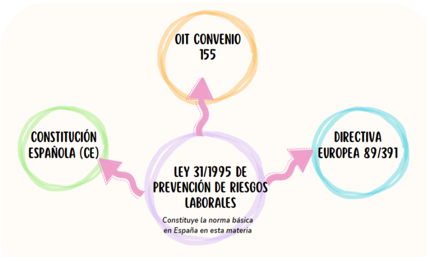

Introducción a la PRL en el sector de la informática. La prevención de riesgos laborales es esencial en todos los sectores, y el ámbito de la informática no es una excepción. La naturaleza de las actividades informáticas puede variar, pero es crucial garantizar la seguridad y bienestar de los trabajadores en este sector. Este manual proporcionará información clave sobre los riesgos específicos en el campo de la informática, la legislación vigente en España, medidas preventivas y recursos adicionales para fomentar un entorno laboral seguro.
Riesgos específicos en el sector de la informática.
#1. Ergonómicos: prolongadas sesiones frente a la computadora pueden causar problemas de postura, fatiga visual y trastornos musculoesqueléticos. Se deben establecer pausas activas y garantizar la ergonomía de las estaciones de trabajo.
#2. Radiación: los equipos electrónicos emiten radiación. Se debe mantener una distancia segura y utilizar protectores si es necesario.
#3. Seguridad informática: riesgos asociados con la seguridad de la información, incluyendo ciberataques y fugas de datos. La concienciación y la formación en seguridad cibernética son cruciales.
#4. Electricidad: conexiones eléctricas inadecuadas o equipos defectuosos pueden causar riesgos eléctricos. Se deben seguir protocolos para el manejo seguro de cables y dispositivos.
Normativa y legislación en España. Cumplir con la normativa legal es fundamental para la prevención de riesgos laborales. En España, la Ley de Prevención de Riesgos Laborales (Ley 31/1995) establece las obligaciones y responsabilidades. Además, el Real Decreto 486/1997 establece las disposiciones mínimas de seguridad y salud en el trabajo con equipos que incluyen equipos con pantallas de visualización. Y también cabe mencionar de Convenio sobre seguridad y salud de los trabajadores, 1981 (núm. C155) y de la DIRECTIVA DEL CONSEJO de 12 de junio de 1989 relativa a la aplicación de medidas para promover la mejora de la seguridad y de la salud de los trabajadores en el trabajo (89/391/CEE).

Medidas de prevención.
#1. Evaluación de riesgos: realizar evaluaciones periódicas para identificar y evaluar los riesgos específicos en el entorno de trabajo.
#2. Formación: proporcionar formación continua sobre seguridad informática, ergonomía y medidas preventivas.
#3. Equipamiento adecuado: garantizar que los trabajadores dispongan de sillas ergonómicas, iluminación adecuada y equipos de protección personal según sea necesario.
#4. Políticas de seguridad de la información: implementar políticas claras sobre el manejo seguro de datos y la prevención de ciberataques.
Recursos adicionales.
Enlaces útiles:
- Instituto Nacional de Seguridad y Salud en el Trabajo (INSST)
- Agencia Española de Protección de Datos (AEPD)